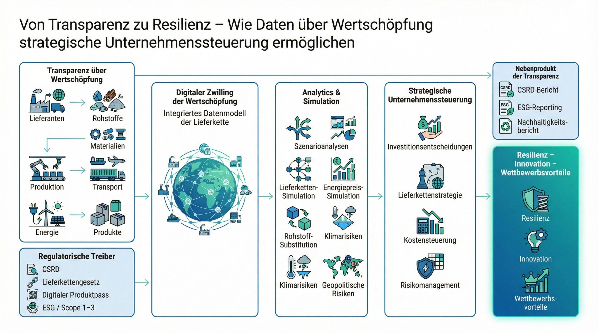
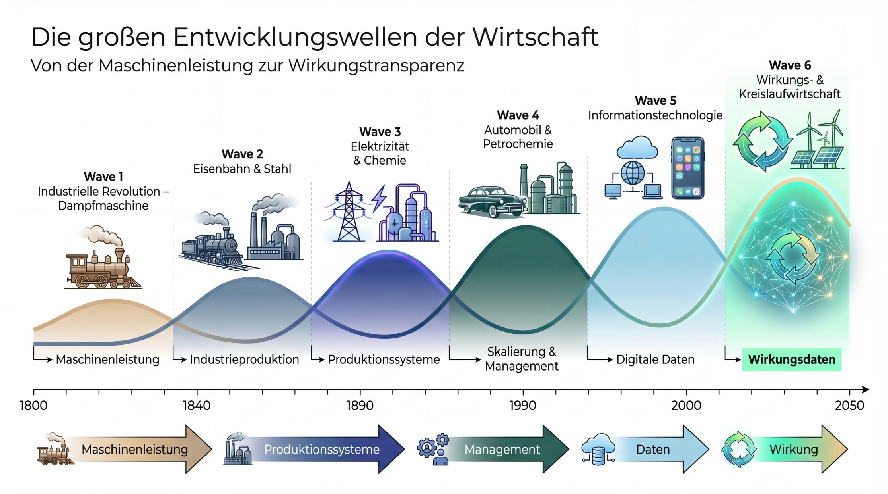

1. Einleitung - Die große Missverständnisdebatte um die CSRD
Kaum eine Regulierung wird derzeit in der Wirtschaft so intensiv diskutiert wie die Corporate Sustainability Reporting Directive (CSRD).
Für viele Unternehmen steht dabei vor allem ein Aspekt im Vordergrund: Der zusätzliche Aufwand. Neue Berichtspflichten, umfangreiche Datenerhebungen und komplexe Anforderungen werden häufig als weiteres Beispiel für zunehmende Bürokratie wahrgenommen.
Diese Sichtweise ist nachvollziehbar. Die Umsetzung der CSRD erfordert tatsächlich erhebliche Anstrengungen. Unternehmen müssen Daten erfassen, Prozesse aufbauen, Systeme integrieren und interne Strukturen anpassen.
Doch genau an dieser Stelle beginnt ein Perspektivwechsel, der in der aktuellen Debatte häufig übersehen wird.
Denn die Daten, die im Rahmen der CSRD erhoben werden müssen, betreffen nicht irgendeinen Randbereich unternehmerischer Tätigkeit. Sie betreffen die zentralen Elemente der Wertschöpfung eines Unternehmens:
Lieferketten
Ressourcen- und Materialflüsse
Energieverbrauch
Emissionen
soziale Standards entlang der Produktion
und die Auswirkungen wirtschaftlicher Aktivitäten auf Umwelt und Gesellschaft.
Mit anderen Worten: Unternehmen werden erstmals systematisch dazu verpflichtet, Transparenz über ihre eigene Wertschöpfung zu schaffen.
Und genau diese Transparenz kann weit mehr sein als eine Berichtspflicht. Sie kann zum Ausgangspunkt einer neuen Form der Unternehmenssteuerung werden.
Der eigentliche Zweck dieser Regulierung wird nämlich häufig missverstanden. Es geht nicht primär um Berichte. Es geht darum, erstmals systematische Transparenz über Wertschöpfung, Lieferketten, Ressourcen und Risiken zu schaffen. Der Nachhaltigkeitsbericht ist dabei nicht der Zweck - sondern lediglich das sichtbarste Nebenprodukt dieser Transparenz. Sie kann zur Grundlage für bessere Entscheidungen werden - für effizientere Prozesse, resilientere Lieferketten, neue Geschäftsmodelle und eine strategischere Steuerung von Wertschöpfung.
Die entscheidende Frage lautet deshalb nicht nur:
Wie aufwendig ist die CSRD?
Sondern auch:
Welche strategischen Chancen entstehen durch die Daten, die dadurch erstmals sichtbar werden?
Gerade im Handel zeigt sich besonders deutlich, welches Potenzial in dieser neuen Transparenz liegt.
Denn kaum eine Branche ist so stark von komplexen globalen Wertschöpfungssystemen abhängig wie der Retail-Sektor.
2. Warum der Handel besonders betroffen ist
Der Handel gehört zu den Branchen, die von den neuen Anforderungen der CSRD besonders stark betroffen sind. Das liegt vor allem an der Struktur seiner Wertschöpfung.
Retail-Unternehmen bewegen enorme Warenströme. Sie koordinieren globale Lieferketten, arbeiten mit einer Vielzahl von Lieferanten zusammen und managen Sortimente mit tausenden oder sogar zehntausenden Produkten. Entsprechend groß ist auch die Menge an Daten, die entlang dieser Wertschöpfung entsteht.
Hinzu kommt eine Entwicklung, die in der öffentlichen Diskussion häufig unterschätzt wird: Viele Handelsunternehmen sind heute längst nicht mehr nur Distributoren von Produkten, sondern selbst Teil der industriellen Wertschöpfung.
Eigenmarken spielen im Handel eine immer größere Rolle. Händler entwickeln Produkte selbst, definieren Materialien und Designs und lassen diese anschließend von Auftragsfertigern produzieren. In vielen Fällen steuern sie damit wesentliche Teile der Produktion - von der Produktentwicklung über die Beschaffung bis hin zur Vermarktung.
Der Handel übernimmt damit zunehmend Funktionen, die früher klassischerweise in der Industrie verortet waren.
Damit wächst auch die Verantwortung entlang der Wertschöpfungskette. Denn wenn Handelsunternehmen über Eigenmarken oder Auftragsfertigung direkt Einfluss auf Produkte und Produktionsbedingungen nehmen, betreffen Nachhaltigkeitsfragen nicht mehr nur den Einkauf, sondern den gesamten Produktlebenszyklus.
Gleichzeitig bewegen Retail-Unternehmen enorme Material- und Ressourcenströme:
Verpackungen
Textilien
Elektronikprodukte
Lebensmittel
Kunststoff- und Rohstoffeinsatz.
Hinzu kommen energieintensive Filialnetze, große Logistikstrukturen und komplexe Transportketten.
Die Anforderungen der CSRD betreffen damit genau die Bereiche, die für den Handel ohnehin zentral sind:
Lieferketten
Materialflüsse
Energieverbrauch
Verpackungen
Transport
und soziale Standards entlang der Produktion.
Was zunächst wie eine zusätzliche Berichtspflicht wirkt, bedeutet für den Handel deshalb etwas anderes: eine systematische Transparenz über die eigene Wertschöpfung.
Und genau darin liegt eine der entscheidenden Chancen der neuen Regulierung.
Denn wer seine Lieferketten, Materialströme und Ressourcenverbräuche wirklich versteht, erhält Informationen, die weit über Nachhaltigkeitsberichte hinausgehen. Sie betreffen zentrale Fragen der Unternehmensstrategie - von Lieferantenentscheidungen über Produktdesign bis hin zur langfristigen Stabilität von Geschäftsmodellen.
Gerade im Handel kann die Transparenz, die durch die CSRD entsteht, deshalb zu einem entscheidenden strategischen Faktor werden.
3. Die neue Realität globaler Wertschöpfung
Die Anforderungen der CSRD entstehen nicht im luftleeren Raum. Sie sind Teil einer größeren Entwicklung, die sich in den letzten Jahren immer deutlicher abzeichnet.
Globale Wertschöpfungssysteme befinden sich in einer Phase tiefgreifender Veränderungen.
Über Jahrzehnte hinweg war wirtschaftliche Organisation vor allem von einem Ziel geprägt: maximale Effizienz durch globale Arbeitsteilung. Produktion wurde dorthin verlagert, wo Kosten am niedrigsten waren, Lieferketten wurden international optimiert, und Unternehmen konzentrierten sich darauf, Skaleneffekte zu nutzen.
Dieses Modell hat erheblich zum wirtschaftlichen Wachstum der vergangenen Jahrzehnte beigetragen. Gleichzeitig hat es jedoch auch zu hochkomplexen, global verzweigten Wertschöpfungssystemen geführt.
In den letzten Jahren ist zunehmend sichtbar geworden, wie anfällig solche Systeme sein können.
Pandemien, geopolitische Konflikte, Handelskonflikte oder Energiekrisen haben gezeigt, wie schnell Lieferketten unter Druck geraten können. Produktionsstandorte fallen aus, Transportwege werden unterbrochen, Rohstoffe werden knapp oder Preise verändern sich innerhalb kurzer Zeit erheblich.
Für viele Unternehmen wurde dadurch eine zentrale Frage immer wichtiger:
Wie stabil sind unsere Wertschöpfungssysteme eigentlich wirklich?
Gleichzeitig verändern sich auch die Rahmenbedingungen wirtschaftlichen Handelns. Klimawandel, Ressourcenknappheit und neue regulatorische Anforderungen wirken zunehmend direkt auf Geschäftsmodelle.
Energiepreise, Rohstoffverfügbarkeit, Transportkosten oder politische Stabilität werden zu Faktoren, die langfristige Investitionsentscheidungen beeinflussen.
Unternehmen müssen deshalb ihre Wertschöpfung zunehmend unter neuen Gesichtspunkten betrachten:
Wie resilient sind unsere Lieferketten?
Welche Materialien könnten künftig knapp oder teuer werden?
Welche Produktionsstandorte sind langfristig stabil?
Wie entwickeln sich Energie- und Transportkosten?
Welche regulatorischen Anforderungen kommen auf uns zu?
Um diese Fragen beantworten zu können, benötigen Unternehmen vor allem eines:
Transparenz über ihre eigene Wertschöpfung.
Genau hier entsteht die Verbindung zur CSRD.
Die Richtlinie zwingt Unternehmen erstmals dazu, systematisch zu erfassen,
wo Ressourcen eingesetzt werden
wo Emissionen entstehen
welche Risiken entlang der Lieferketten bestehen
und welche Auswirkungen wirtschaftliche Aktivitäten tatsächlich haben.
Damit entsteht eine neue Form von Information über wirtschaftliche Systeme.
Und genau diese Information kann in einer zunehmend komplexen Welt zu einem entscheidenden strategischen Faktor werden.
Denn nur wer seine Wertschöpfung wirklich versteht, kann sie auch aktiv gestalten.
4. Warum Transparenz zum strategischen Faktor wird
Die zunehmende Komplexität globaler Wertschöpfungssysteme verändert die Anforderungen an Unternehmensführung grundlegend.
Über viele Jahre hinweg konnten Unternehmen ihre Wertschöpfung relativ stabil organisieren. Lieferketten waren zwar international, aber die Rahmenbedingungen galten als weitgehend berechenbar. Kostenoptimierung und Effizienz standen im Mittelpunkt strategischer Entscheidungen.
Heute verschiebt sich dieser Fokus zunehmend.
In einer Welt mit geopolitischen Spannungen, volatilen Energiepreisen, Ressourcenknappheit und wachsender regulatorischer Komplexität wird eine andere Fähigkeit immer wichtiger: das eigene Wertschöpfungssystem wirklich zu verstehen.
Unternehmen müssen wissen,
wo ihre Rohstoffe herkommen,
welche Materialien in ihren Produkten stecken,
wie energieintensiv einzelne Produktionsschritte sind,
welche Abhängigkeiten entlang der Lieferketten bestehen
und welche Risiken sich daraus ergeben können.
Genau diese Transparenz war in vielen Unternehmen bislang nur begrenzt vorhanden. Daten über Lieferketten, Materialflüsse oder Emissionen waren häufig fragmentiert, verteilt über unterschiedliche Systeme oder nur teilweise verfügbar.
Mit der CSRD verändert sich diese Situation grundlegend.
Unternehmen werden erstmals systematisch dazu verpflichtet, Informationen über ihre gesamte Wertschöpfung zu erfassen und zu strukturieren. Lieferketten, Ressourcenverbräuche, Emissionen und soziale Standards werden damit zu messbaren und vergleichbaren Größen.
Was zunächst wie eine regulatorische Pflicht erscheint, erzeugt damit gleichzeitig eine neue Form strategischer Information.
Denn Transparenz über Wertschöpfung bedeutet auch Transparenz über Risiken, Kostenstrukturen und Effizienzpotenziale.
Unternehmen können dadurch besser erkennen,
wo Abhängigkeiten von einzelnen Lieferanten bestehen,
welche Materialien langfristige Preisrisiken bergen,
welche Produktions- oder Logistikprozesse besonders energieintensiv sind,
oder wo sich Ineffizienzen entlang der Wertschöpfung verbergen.
Mit anderen Worten: Nachhaltigkeitsdaten werden gleichzeitig zu Managementdaten.
Sie liefern Informationen, die für zentrale strategische Entscheidungen relevant sind - von Investitionen über Lieferantenstrategien bis hin zur Entwicklung neuer Produkte.
Damit verändert sich auch die Rolle von Nachhaltigkeit im Unternehmen.
Sie ist nicht mehr nur ein Thema für Berichte oder Kommunikation.
Sie wird zu einem Bestandteil der Unternehmenssteuerung.
Gerade in einer Welt, die zunehmend von Unsicherheit und strukturellen Veränderungen geprägt ist, kann diese Transparenz zu einem entscheidenden strategischen Vorteil werden.
Denn wer seine Wertschöpfung wirklich versteht, kann sie nicht nur effizienter organisieren - sondern auch stabiler, resilienter und zukunftsfähiger gestalten.
Eine unbequeme Frage zur Unternehmenssteuerung
Wenn man diesen Punkt konsequent weiterdenkt, stellt sich eine interessante Frage.
Viele Unternehmen wurden in den letzten Jahrzehnten stark finanzgetrieben gesteuert. Kennzahlen wie Umsatz, Marge, Cashflow oder ROI standen im Zentrum der Managemententscheidungen. Gerade aus dieser Perspektive müssten jedoch Risiko und Resilienz zentrale Steuerungsgrößen sein.
Doch viele der größten wirtschaftlichen Risiken entstehen heute nicht primär im Finanzsystem selbst, sondern in der Wertschöpfung:
instabile Lieferketten
geopolitische Abhängigkeiten
Ressourcenknappheit
Energiepreisvolatilität
Klimarisiken
Ohne Transparenz über Lieferketten, Materialien, Ressourcenströme und Produktionsstrukturen bleiben diese Risiken jedoch lange unsichtbar - zumindest so lange, bis sie sich finanziell bemerkbar machen.
Genau hier setzt die neue Regulierung an.
Die CSRD zwingt Unternehmen erstmals dazu, ihre Wertschöpfung systematisch sichtbar zu machen - von Lieferketten über Ressourcenströme bis hin zu Klima- und Sozialwirkungen.
Damit entsteht etwas, das vielen Unternehmen bislang nur begrenzt zur Verfügung stand: eine integrierte Datengrundlage über die systemischen Risiken ihrer eigenen Wertschöpfung.
Vielleicht liegt darin eine der interessantesten Erkenntnisse der aktuellen Regulierung:
Die eigentliche Überraschung der CSRD ist nicht die Berichtspflicht - sondern die Tatsache, wie wenig systemische Transparenz viele Unternehmen bisher über ihre eigene Wertschöpfung hatten.
Was heute häufig als Bürokratie wahrgenommen wird, kann sich daher auch anders interpretieren lassen: als Schließen einer strukturellen Lücke in der Unternehmenssteuerung.
Denn Transparenz über Wertschöpfung bedeutet letztlich auch: Risiken früher erkennen, Abhängigkeiten verstehen und Unternehmen resilienter steuern.
Wenn Unternehmen ihre Wertschöpfung so systematisch erfassen, entsteht erstmals ein integriertes Datenmodell der eigenen Lieferkette.
Damit wird etwas möglich, das viele Unternehmen bisher kaum konnten: Die systemische Analyse und Simulation ihrer Wertschöpfung.
Ein häufiges Missverständnis besteht darin, die CSRD als Berichtspflicht zu verstehen.
Tatsächlich ist der Bericht lediglich ein Output der Datenerhebung. Der eigentliche Wert liegt in der Datenbasis selbst. Erst diese Transparenz ermöglicht es Unternehmen, ihre Wertschöpfung systemisch zu analysieren und Szenarien zu simulieren.
5. Welche konkreten Unternehmenswerte entstehen
Wenn Unternehmen beginnen, ihre Wertschöpfung systematisch zu analysieren und die dafür notwendigen Daten zu integrieren, entstehen daraus nicht nur neue Berichtsmöglichkeiten. Es entstehen vor allem neue Informationsgrundlagen für unternehmerische Entscheidungen.
Diese Transparenz kann für Unternehmen in mehreren Bereichen unmittelbar wirtschaftlichen Nutzen schaffen.
Risikominimierung
Globale Lieferketten sind heute stärker denn je geopolitischen und wirtschaftlichen Risiken ausgesetzt. Handelskonflikte, politische Instabilität, Ressourcenknappheit oder neue regulatorische Anforderungen können Lieferketten plötzlich verändern oder unterbrechen.
Unternehmen, die ihre Lieferketten detailliert verstehen, können solche Risiken deutlich früher erkennen.
Sie können kritische Rohstoffe identifizieren, Abhängigkeiten von einzelnen Lieferanten reduzieren oder alternative Beschaffungsstrukturen aufbauen. Auch regulatorische Risiken lassen sich frühzeitig berücksichtigen, wenn Informationen über Produktionsbedingungen oder Materialherkünfte verfügbar sind.
Transparenz entlang der Wertschöpfung wird damit zu einem zentralen Instrument für strategisches Risikomanagement.
Kostensenkung und Effizienz
Nachhaltigkeitsdaten sind in vielen Fällen zugleich Effizienzdaten.
Wer Materialflüsse, Energieverbräuche oder Logistikstrukturen systematisch analysiert, erkennt häufig Einsparpotenziale, die zuvor nicht sichtbar waren.
Beispiele finden sich in vielen Bereichen der Wertschöpfung:
energieeffizientere Filialen und Lagerstrukturen
optimierte Transportwege und Logistikprozesse
reduzierte Verpackungsmengen
geringere Materialverluste in Produktion und Distribution.
Nachhaltigkeit wird damit nicht nur zu einer Frage der Verantwortung, sondern auch zu einem Instrument für Operational Excellence.
Resilienz von Geschäftsmodellen
Unternehmen müssen ihre Geschäftsmodelle zunehmend auf eine Welt ausrichten, die von Unsicherheit geprägt ist.
Klimarisiken, Energiepreise, Ressourcenverfügbarkeit oder geopolitische Entwicklungen beeinflussen langfristig die Stabilität wirtschaftlicher Systeme.
Die Daten, die im Rahmen der CSRD erhoben werden, helfen dabei zu verstehen,
welche Teile der Wertschöpfung besonders anfällig sind,
welche Materialien langfristige Risiken bergen,
oder welche Produktionsstrukturen stärker abgesichert werden müssen.
Damit wird Transparenz über Wertschöpfung auch zu einem wichtigen Faktor für die Resilienz von Geschäftsmodellen.
Innovation und neue Geschäftsmodelle
Ein besonders spannender Effekt entsteht durch die zunehmende Transparenz über Produkt- und Materialströme.
Wenn Unternehmen ihre Wertschöpfung besser verstehen, eröffnen sich häufig neue Möglichkeiten für Innovation.
Im Handel wird das besonders sichtbar durch Entwicklungen wie:
Rücknahme- und Wiederverwertungssysteme
Reparatur- und Refurbishment-Modelle
Second-Life-Produkte
oder neue Dienstleistungen rund um Nutzung und Wiederverwendung.
Wertschöpfung endet damit nicht mehr beim Verkauf eines Produkts. Produkte werden zunehmend Teil eines längeren Lebenszyklus, in dem Materialien mehrfach genutzt werden können.
Aus linearen Lieferketten entstehen so Schritt für Schritt zirkuläre Wertschöpfungsmodelle.
6. Vom Reporting zum Managementsystem
Wenn man die bisherigen Entwicklungen zusammennimmt, wird deutlich: Die eigentliche Bedeutung der CSRD liegt nicht im Reporting.
Sie liegt in der Integration von Nachhaltigkeitsdaten in die Steuerung von Unternehmen.
Viele Organisationen behandeln Nachhaltigkeitsinformationen heute noch als separates Thema. Häufig sind sie in Nachhaltigkeits- oder CSR-Abteilungen angesiedelt und organisatorisch von operativen Entscheidungsprozessen getrennt.
Doch genau dieses Verständnis beginnt sich gerade zu verändern.
Denn die Daten, die im Rahmen der CSRD erhoben werden, betreffen zentrale Elemente wirtschaftlicher Wertschöpfung. Sie beziehen sich auf Materialien, Energieflüsse, Lieferkettenstrukturen, Produktionsprozesse oder Transportwege.
Damit sind sie unmittelbar mit den Entscheidungen verbunden, die Unternehmen täglich treffen:
Investitionen
Produktdesign
Lieferantenstrategien
Produktions- und Logistikstrukturen
Preisgestaltung
und langfristige Unternehmensstrategien.
Wenn diese Informationen systematisch erfasst und integriert werden, entsteht eine neue Form von Transparenz über wirtschaftliche Prozesse.
Die Grundlage bilden Daten aus der gesamten Wertschöpfung:
Produktentwicklung
Beschaffung und Produktion
Transport und Distribution
Nutzung von Produkten
sowie deren Rückführung und Wiederverwertung.
Diese Daten stammen häufig aus unterschiedlichen Systemen - etwa ERP-Systemen, Lieferanteninformationen, Produktdatenbanken oder Energiemanagementsystemen.
Erst durch ihre Integration entsteht ein umfassendes Bild der tatsächlichen Wertschöpfung.
Aus dieser Datengrundlage lassen sich Kennzahlen entwickeln, die für die Unternehmenssteuerung relevant sind, zum Beispiel:
Emissionen
Ressourceneffizienz
Lieferkettenrisiken
Materialintensität
oder andere Wirkungskennzahlen.
Damit verändert sich die Rolle von Nachhaltigkeitsinformationen grundlegend.
Sie dienen nicht mehr nur der Berichterstattung gegenüber externen Stakeholdern.
Sie werden zu einem Bestandteil der internen Steuerung von Unternehmen.
Oder anders formuliert:
Nachhaltigkeit entwickelt sich vom Reporting-Thema zum Management-Thema.
Unternehmen beginnen damit, ökologische, soziale und ökonomische Faktoren gemeinsam zu betrachten - nicht getrennt voneinander.
Denn wirtschaftliche Entscheidungen erzeugen immer auch Wirkung:
auf Menschen entlang der Lieferkette
auf natürliche Ressourcen und Klima
und auf die Stabilität wirtschaftlicher Systeme.
Die Integration dieser Perspektiven in Managemententscheidungen ist ein entscheidender Schritt hin zu einer neuen Form der Unternehmenssteuerung.
Die folgende Architektur zeigt, wie aus Transparenz über Wertschöpfung strategische Entscheidungsfähigkeit entsteht.
Der Nachhaltigkeitsbericht ist dabei nicht der Ausgangspunkt - sondern ein Nebenprodukt der Datenbasis, die Unternehmen für ihre eigene Steuerung benötigen.

7. Neue Wertschöpfung: Kreislaufwirtschaft und das fünfte P
Wenn Unternehmen beginnen, ihre Wertschöpfung umfassender zu analysieren, verändert sich nicht nur die Art, wie sie Entscheidungen treffen. Es verändert sich auch die Perspektive darauf, wo Wertschöpfung überhaupt beginnt und endet.
Über lange Zeit war wirtschaftliche Organisation überwiegend linear gedacht: Rohstoffe werden gewonnen, Produkte hergestellt, verkauft und schließlich entsorgt.
Dieses Modell hat über Jahrzehnte funktioniert, stößt jedoch zunehmend an seine Grenzen. Ressourcen werden knapper, Entsorgungskosten steigen, und gleichzeitig wächst der Druck, Materialien effizienter zu nutzen.
Mit zunehmender Transparenz über Materialflüsse und Produktlebenszyklen wird deshalb eine andere Perspektive möglich: Wertschöpfung endet nicht mehr beim Verkauf eines Produkts.
Produkte können repariert, wiederverwendet, recycelt oder als Rohstoffquelle für neue Produkte genutzt werden. Materialien zirkulieren länger im Wirtschaftssystem, statt nach einmaliger Nutzung verloren zu gehen.
Damit entsteht eine neue Phase der Wertschöpfung: Produkte verlassen das Unternehmen nicht mehr endgültig, sondern können wieder in wirtschaftliche Kreisläufe zurückgeführt werden.
Gerade im Handel eröffnet diese Entwicklung neue Möglichkeiten. Da Retail-Unternehmen direkten Zugang zu Kundinnen und Kunden haben, können sie eine zentrale Rolle bei der Organisation solcher Kreisläufe übernehmen - etwa durch Rücknahmeprogramme, Reparaturservices oder Wiederverkaufsplattformen.
Aus dieser Perspektive erweitert sich auch ein klassisches Modell des Marketings.
Traditionell wird Marketing entlang der sogenannten vier P beschrieben:
Product
Price
Place
Promotion.
Mit der zunehmenden Bedeutung von Kreislaufwirtschaft und Ressourcennutzung kommt eine weitere Dimension hinzu:
Planet.
Dieses fünfte P beschreibt nicht nur ökologische Verantwortung. Es erweitert vielmehr die Perspektive der Wertschöpfung.
Produkte werden nicht mehr ausschließlich bis zum Verkaufszeitpunkt gedacht, sondern über ihren gesamten Lebenszyklus hinweg - von der Entwicklung über Produktion und Nutzung bis hin zur Rückführung und Wiederverwertung.
Damit entstehen neue Geschäftsmodelle rund um:
Rücknahme und Wiederverkauf
Reparatur und Refurbishment
Second-Life-Produkte
Recyclingbasierte Produktionsprozesse
oder Dienstleistungen rund um Nutzung und Wiederverwendung.
Gleichzeitig wirkt die Perspektive des „Planet“ als Querschnitt über alle unternehmerischen Entscheidungen. Jede Entscheidung über Produkte, Materialien, Lieferketten oder Logistik hat auch Auswirkungen auf Ressourcen, Emissionen und ökologische Systeme.
Das fünfte P erweitert damit die klassische Marketinglogik um eine zusätzliche Dimension der Wertschöpfung - und verbindet wirtschaftliche Entscheidungen stärker mit ihren langfristigen Wirkungen auf natürliche Systeme.
8. Die größere Transformation der Wirtschaft
Wenn man die bisherigen Entwicklungen zusammennimmt, wird deutlich, dass es bei der CSRD nicht nur um eine neue Berichtspflicht geht.
Sie ist Teil einer größeren Veränderung der wirtschaftlichen Informationsbasis.
Über viele Jahrzehnte hinweg wurden wirtschaftliche Entscheidungen vor allem anhand finanzieller Kennzahlen bewertet. Umsatz, Kosten, Gewinn oder Rendite galten als zentrale Maßstäbe unternehmerischen Erfolgs.
Diese Kennzahlen bleiben auch künftig wichtig. Doch sie bilden nur einen Teil der wirtschaftlichen Realität ab.
Jede wirtschaftliche Aktivität hat auch andere Auswirkungen: auf Ressourcen, auf Umwelt, auf Menschen entlang globaler Lieferketten und auf die Stabilität wirtschaftlicher Systeme.
Lange Zeit blieben diese Wirkungen jedoch weitgehend unsichtbar. Sie wurden nur indirekt berücksichtigt oder erst dann sichtbar, wenn Probleme bereits entstanden waren.
Mit neuen Regulierungen, Datenstandards und Berichtspflichten beginnt sich diese Situation zu verändern.
Lieferkettenwirkungen, Emissionen, Ressourcennutzung oder soziale Risiken werden zunehmend messbar und vergleichbar. Unternehmen beginnen, systematisch zu erfassen, welche Auswirkungen ihre wirtschaftlichen Aktivitäten tatsächlich haben.
Damit entsteht eine neue Form wirtschaftlicher Transparenz.
Diese Transparenz verändert nicht nur Berichte oder Kommunikationsstrategien. Sie verändert langfristig auch die Art und Weise, wie Märkte funktionieren.
Investoren berücksichtigen Risiken anders. Unternehmen treffen andere Investitionsentscheidungen. Produktdesign und Lieferketten werden neu gedacht. Neue Geschäftsmodelle entstehen.
Was heute noch wie eine regulatorische Verpflichtung erscheint, könnte sich deshalb langfristig als etwas anderes erweisen:
als ein erster Schritt hin zu einer Wirtschaft, in der nicht nur Kapitalflüsse sichtbar sind, sondern auch die Wirkungen wirtschaftlicher Aktivitäten.
9. Die Perspektive der Kondratieff-Zyklen
Ökonominnen und Ökonomen beschreiben wirtschaftliche Entwicklung häufig in sogenannten Kondratieff-Zyklen. Gemeint sind langfristige Innovationswellen, die über mehrere Jahrzehnte hinweg Wirtschaft und Gesellschaft prägen.
Solche Phasen wurden in der Vergangenheit meist durch grundlegende technologische Veränderungen ausgelöst.

Die Dampfmaschine leitete die Industrialisierung ein. Elektrizität und chemische Industrie veränderten Produktionssysteme grundlegend. Automobilität und petrochemische Industrie prägten die Wirtschaft des 20. Jahrhunderts. Und in den vergangenen Jahrzehnten hat die Informationstechnologie eine neue Phase wirtschaftlicher Entwicklung hervorgebracht.
Jede dieser Entwicklungsphasen brachte nicht nur neue Technologien hervor, sondern veränderte auch die Art und Weise, wie Wirtschaft organisiert und gesteuert wurde.
Mit der Industrialisierung standen Maschinenleistung und mechanische Produktion im Mittelpunkt. Mit der Massenproduktion wurden Kostenrechnung und Managementsysteme wichtiger. Mit der Digitalisierung rückten Daten und Informationssysteme in den Mittelpunkt wirtschaftlicher Steuerung.
Viele Beobachter gehen heute davon aus, dass wir am Beginn einer neuen Entwicklungsphase stehen.
Diese nächste Phase wird vermutlich nicht allein durch eine einzelne Technologie geprägt sein. Stattdessen rücken Fragen der Ressourcennutzung, der Stabilität von Lieferketten, der Kreislaufwirtschaft und der langfristigen Wirkung wirtschaftlicher Aktivitäten stärker in den Mittelpunkt.
Damit verändert sich auch die Informationsbasis wirtschaftlicher Entscheidungen.
Während frühere Entwicklungsphasen vor allem durch neue Energie- oder Informationstechnologien geprägt waren, könnte die nächste Phase stärker durch Transparenz über Ressourcen, Lieferketten und Wirkungen geprägt sein.
In diesem Zusammenhang erhält auch die CSRD eine neue Bedeutung.
Sie schafft erstmals eine systematische Datengrundlage über die Auswirkungen wirtschaftlicher Aktivitäten entlang globaler Wertschöpfungsketten.
Man könnte deshalb auch sagen: Die CSRD liefert einen Teil der Dateninfrastruktur, die notwendig ist, um wirtschaftliche Systeme in einer zunehmend komplexen Welt besser zu verstehen - und damit auch besser zu steuern.
10. Die eigentliche Chance der CSRD
Die Diskussion über die CSRD wird derzeit häufig von einer Frage dominiert: Wie groß ist der zusätzliche Aufwand für Unternehmen?
Diese Frage ist berechtigt. Die Umsetzung der Richtlinie erfordert tatsächlich erhebliche Anstrengungen. Daten müssen erhoben, Systeme integriert und Prozesse angepasst werden.
Doch diese Perspektive greift zu kurz.
Denn unabhängig davon, wie man einzelne regulatorische Anforderungen bewertet, bewirkt die CSRD etwas Grundsätzliches: Sie zwingt Unternehmen dazu, ihre Wertschöpfung erstmals systematisch sichtbar zu machen.
Lieferketten, Materialflüsse, Energieverbräuche, Emissionen und soziale Standards werden damit zu messbaren Größen.
Und genau diese Transparenz verändert die Grundlage wirtschaftlicher Entscheidungen.
Unternehmen, die ihre Wertschöpfung besser verstehen, können Risiken früher erkennen, Kostenstrukturen optimieren, Lieferketten stabiler gestalten und neue Geschäftsmodelle entwickeln.
Gerade im Handel zeigt sich besonders deutlich, welches Potenzial darin liegt. Unternehmen, die heute globale Wertschöpfungssysteme koordinieren, können durch diese Transparenz nicht nur effizienter arbeiten, sondern auch neue Formen wirtschaftlicher Organisation entwickeln - etwa durch Kreislaufmodelle oder neue Dienstleistungen rund um den Lebenszyklus von Produkten.
Was heute noch häufig als zusätzliche Berichtspflicht wahrgenommen wird, könnte sich deshalb langfristig als etwas anderes erweisen:
als ein Schritt hin zu einer Wirtschaft, die ihre eigenen Wirkungen besser versteht.
Und genau darin könnte die eigentliche Chance der CSRD liegen.
Nicht nur als Instrument der Regulierung - sondern als Ausgangspunkt für eine transparentere und strategisch besser steuerbare Wirtschaft.
Fazit: Transparenz wird zur strategischen Ressource
In einer zunehmend komplexen Welt entstehen wirtschaftliche Risiken nicht mehr nur in Märkten oder Finanzsystemen. Sie entstehen entlang globaler Wertschöpfungsketten - durch geopolitische Spannungen, Ressourcenknappheit, Energiepreise, Klimarisiken oder soziale Instabilität.
Unternehmen, die diese Zusammenhänge frühzeitig erkennen, können ihre Lieferketten stabiler gestalten, Kostenstrukturen verbessern und strategische Abhängigkeiten reduzieren. Genau dafür braucht es vor allem eines: Transparenz über die eigene Wertschöpfung.
Die CSRD zwingt Unternehmen erstmals dazu, diese Transparenz systematisch aufzubauen. Was zunächst wie zusätzliche Berichtspflichten erscheint, kann damit eine ganz andere Wirkung entfalten: Es entsteht eine Datengrundlage, die Risiken sichtbar macht, Managemententscheidungen verbessert und neue strategische Möglichkeiten eröffnet.
Oder anders gesagt:
Die CSRD ist nicht nur eine Regulierung - sie ist eine Infrastruktur für bessere Unternehmenssteuerung in einer komplexen Welt.
Und genau deshalb könnte sich etwas, das heute vielerorts als Bürokratie kritisiert wird, langfristig als strategischer Vorteil erweisen.
Denn aus der Pflicht entsteht manchmal genau das, was Unternehmen am dringendsten brauchen: Klarheit über ihr eigenes System.